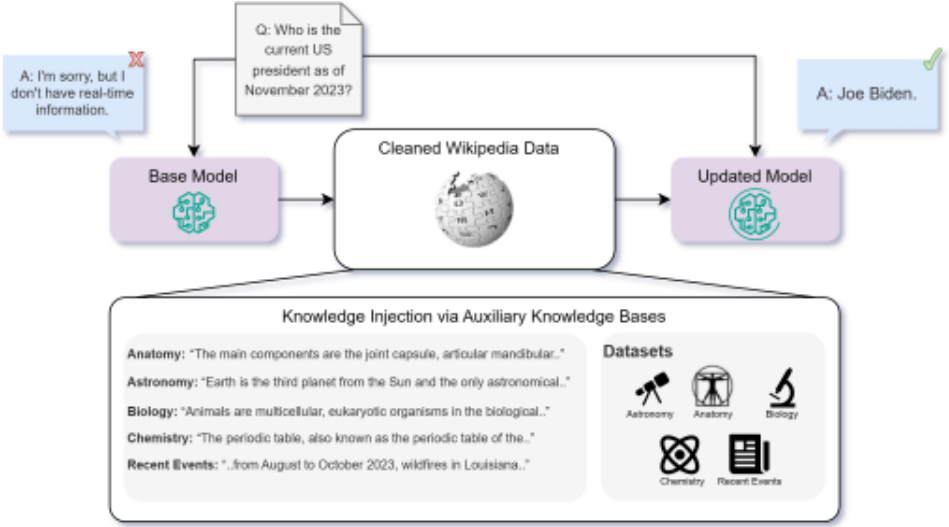
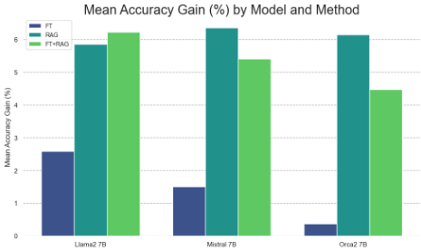
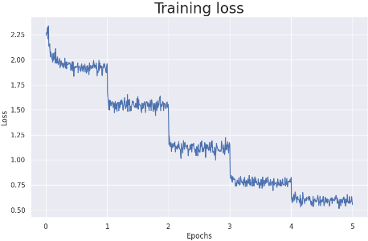
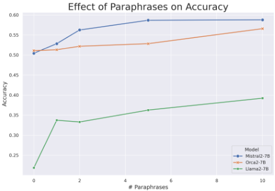

微调还是检索？对比 LLM 中的知识注入方法
论文针对'如何向预训练 LLM 注入知识'这一工程选型问题，系统比较了无监督微调（continual pre-training）与 RAG 两条路线。作者从 Wikipedia 抓取语料构建辅助知识库，在 MMLU 五个知识密集型子任务和自建的 910 道时事选择题（模型训练截止后的新知识）上，用 Llama2-7B、Mistral-7B、Orca2-7B 配合 bge-large-en + FAISS 的 RAG 管线，在 LM-Evaluation-Harness 下做网格化对比。关键结论：RAG 在已有知识和全新知识两类场景下都稳定优于无监督微调；微调在全新知识上甚至显著降低 Llama2 的准确率，而用 GPT-4 生成多条同义改写做数据增强后，微调准确率随改写数量单调上升。论文还发现 RAG 的 topK 超参不稳定、FT+RAG 组合并不总是更好。对团队而言，这为知识库问答等场景中'选 RAG 还是微调'提供了直接的实证依据。
给定一个文本语料形式的辅助知识库，应该用无监督微调还是 RAG 把其中的知识注入预训练 LLM？即：哪种知识注入方式能更有效地提升模型在知识密集型问答任务上的表现，尤其是对训练截止后的全新事实知识。
构建统一的知识注入评测框架：从 Wikipedia 抓取各主题文章并清洗分块作为知识库；选取 MMLU 中五个重事实、轻推理的子任务（anatomy、astronomy、college biology、college chemistry、prehistory），并用 GPT-4 从 2023 年 8-11 月美国时事 Wikipedia 语料自动生成 910 道全新知识选择题（含人工校验）。对比四种配置：base 模型、RAG（bge-large-en 嵌入 + FAISS 向量库，topK 检索后拼接进 query）、无监督微调（continual pre-training，chunk 大小 256，低学习率 1e-6~5e-5，4×A100）以及 FT+RAG 组合；用 LM-Evaluation-Harness 以 log-likelihood 准确率评测，并做 0-shot/5-shot 与 K∈{0,...,5} 的消融。另用 GPT-4 生成同义改写做数据增强，研究重复表述对微调学习新知识的影响。
在全部 MMLU 任务与三个模型（0-shot 和 5-shot）上，RAG 均显著优于 base 模型，且 base 模型 + RAG 一致优于仅微调；部分情况下用微调后模型作 RAG 生成器可进一步提升，但结果不一致，体现微调的内在不稳定性
在全新知识时事任务（910 题）上，RAG 因问题与知识库一一对应而特别有效；标准无监督微调不仅未提升反而显著降低 Llama2 的性能；FT+RAG 组合反而不如 RAG 单独使用
用 GPT-4 生成同义改写做数据增强后，所有测试模型的准确率随改写数量呈单调上升
base 模型在训练截止后的时事题上准确率仍超过随机基线 1/L=0.25，作者归因于推理能力与已有知识的补偿作用
RAG topK 消融（K∈{0,...,5}）未找到可预测的最佳 K（仅 Anatomy 稳定于 K=2），最佳与最差 K 之间差距可能很大，该超参被判定为不稳定
5-shot 在多数情况下带来小幅提升，各方法趋势一致
作者称这是首批系统对比微调与 RAG 两条知识注入路线的研究之一。区别于以往单一方法的研究，论文给出了知识注入的形式化定义（基于多选题准确率的知识评分），在相同语料、相同评测框架下对齐比较持续预训练式微调与免训练 RAG；并提出并验证'新知识必须以多种表述重复出现才能被微调学会'的假设，把 pre-training 中关于数据重复的发现（Kandpal et al., 2023）延伸到微调场景，同时关联了 Reversal Curse 问题。
相关度级别：high
命中能力域：3.1 上下文工程与记忆 | 3.5 评测与可靠使用
理由：论文核心问题'微调还是 RAG'正是团队知识库问答等场景最常面临的技术选型，直接命中 3.1 的 RAG/检索增强核心技术；其结论（RAG 稳定优于无监督微调、新知识需多表述重复才能被微调学会）为团队'把模型用好而非训练模型'的定位提供了实证支撑，可避免在低收益的领域微调上投入。同时，论文的评测设计（LM-Evaluation-Harness、log-likelihood 准确率、topK 消融）与'RAG 超参不稳定'的发现，对 3.5 的评测方法与可靠使用有直接参考价值。
建议动作：深入精读并做内部分享
arXiv:2312.05934v3 [cs.AI] 2024年1月30日
微调还是检索？比较大语言模型（LLM）中的知识注入
Oded Ovadia * † 、Menachem Brief † 、Moshik Mishaeli 和 Oren Elisha
{ odedovadia,t-mbrief,mmishaeli,oren.elisha } @microsoft.com 微软，以色列
大语言模型（Large Language Models, LLM）在其预训练权重中封装了海量的事实性信息，这一点从其能够回答跨不同领域的多样化问题的能力中可见一斑。然而，这些知识存在固有的局限性，在很大程度上依赖于训练数据的特性。因此，利用外部数据集来注入新信息，或改进 LLM 对先前已见信息的处理能力，构成了一项重大挑战。在本研究中，我们比较了两种常见方法：无监督微调（unsupervised fine-tuning）和检索增强生成（Retrieval-Augmented Generation, RAG）。我们在涵盖不同主题的多种知识密集型任务上对这两种方法进行了评估。我们的研究结果表明，虽然无监督微调能带来一定程度的改进，但无论是针对训练期间遇到过的既有知识，还是全新的知识，RAG 始终优于前者。此外，我们发现 LLM 难以通过无监督微调学习新的事实性信息，而在训练过程中让模型接触同一事实的多种变体可以缓解这一问题。
关键词：LLM、NLP、微调与 RAG 对比、知识与事实性。
大语言模型（LLM）能够捕获海量的事实性信息（Petroni et al., 2019; Cohen et al., 2023; Hu et al., 2023）。凭借庞大的预训练数据集，LLM 在各个领域都展现出显著的知识水平。然而，这种知识存在两个显著的局限。其一，它是静态的，不会随时间更新。其二，它是非特定的，因而可能在特定领域缺乏细致精深的专业知识。尽管这是两个不同的问题，但它们密切相关，因为二者的解决方案是相同的：增强模型的知识。
* 通讯作者。
† 同等贡献。
近年来，将 LLM 适配到特定领域并更新其知识的想法日益普遍（Yu et al., 2022）。为提升医疗保健（Singhal et al., 2023a;b; Wu et al., 2023a）、金融（Wu et al., 2023b; Yang et al., 2023）和法律（Huang et al., 2023; Nguyen, 2023）等不同领域的事实性知识与能力，已有多种模型被提出。
在本工作中，我们聚焦于评估模型的知识及其记忆、理解和检索事实数据的能力。我们旨在理解知识注入（knowledge injection）这一概念（Wang et al., 2020; Chen et al., 2022; Liu et al., 2020; Lauscher et al., 2020）。给定某种以文本语料库形式存在的知识库，将这部分知识教授给预训练模型的最佳方式是什么？
向预训练模型添加知识的一种方式是微调（fine-tuning）。通过微调，我们延续模型的训练过程，并使用任务特定的数据对其进行适配。通过让模型接触特定的知识库，我们期望模型权重会相应地调整。这一过程旨在针对目标应用对模型进行优化，提升其在专门领域中的性能与上下文相关性。
增强模型知识库的另一种方法是使用上下文学习（in-context learning, ICL）（Chen et al., 2021; Radford et al., 2019; Min et al., 2021; Lampinen et al., 2022）。ICL 的核心思想是，在不直接更改模型权重的前提下，通过修改输入给模型的查询来提升预训练 LLM 在新任务上的性能。ICL 的一种形式是检索增强生成（RAG）（Lewis et al., 2020; Neelakantan et al., 2022）。RAG 利用信息检索技术，使 LLM 能够从知识源中获取相关信息，并将其融入所生成的文本中。
本研究旨在通过对比微调与 RAG 来评估 LLM 的知识注入能力。为说明其中的道理，让我们使用一个类比。设想三名大学生参加一场关于某一特定主题的考试。三人都能获取课堂材料，但事先并不知道该主题。第一名学生只在考试期间才拥有教科书，第二名学生在考前可以获取并进行了学习，而第三名学生则在考试公布时便失去了获取途径。谁更可能表现得更好？
事实性错误的成因 模型无法准确回答事实性问题的原因可能有很多。在 (Wang et al., 2023) 中，Wang 等人提出了一个包含五种主要模型层面成因的分类体系：

复杂的多步推理任务 (Tan et al., 2023)，或者在被问及关于同一事实的不同问题时，产生截然不同的结果 (Berglund et al., 2023)。
我们观察到，这些问题大多出现在预训练阶段，灾难性遗忘（catastrophic forgetting）是一个显著的例外。因此，无论经过何种后训练过程，许多 LLM 都会出现此类事实性错误。
根据第 2 节给出的背景可以清楚地看出，对于许多知识密集型任务而言，通用的预训练是不够的。为了解决这一问题，必须增加一个额外的后处理步骤来扩充预训练模型的知识。这一步骤通常被称为知识注入（knowledge injection）(Wang et al., 2020; Chen et al., 2022; Liu et al., 2020; Lauscher et al., 2020)。
在本节中，我们考察两种广泛使用的知识注入框架：微调（FT）和检索增强生成（RAG）。我们首先对知识注入问题进行形式化表述，旨在使用一致的术语来解释这两种方法。
在公式 (1) 和 (2) 中，我们通过问答（Q&A）的视角给出了语言模型中知识的一种形式化表述。现在，我们使用相同的术语，将这一表述扩展到知识注入问题。
给定一组事实性问题，存在某个文本语料库，其中包含与这些问题相关的信息。知识注入的核心假设是：若能完全访问该语料库，它便可作为一个辅助知识库，从而提升模型在这组问题上的表现。
在数学上，设 M 为一个预训练模型，并设 Q 为一组事实性问题，与之前相同。现在，假设我们拥有一个相关的辅助知识库 B Q。我们的目标是找到一种变换，记为 F，当其被应用时，能够增强关于 Q 的知识：
在本工作中，我们旨在比较 F 的两种选择：微调与 RAG，以观察哪种方案在该问题中表现更佳。
微调（fine-tuning，FT）是指在某个特定的、通常范围更窄的数据集或任务上对预训练模型进行调整，以提升其在该特定领域表现的过程。在这里，区分不同类型的微调至关重要。FT 技术通常被划分为基于监督学习、无监督学习和强化学习（reinforcement learning，RL）的方法。下面，我们简要回顾这些方法以及它们与知识注入问题的关系。
监督微调 监督微调（supervised fine-tuning，SFT）需要带标签的输入-输出对集合。最常见的 SFT 方法之一是指令微调（instruction tuning）（Wang et al., 2022; Mishra et al., 2021; Ouyang et al., 2022; Taori et al., 2023），它已成为提升模型性能最为强大的方法之一。在指令微调中，输入是自然语言的任务描述，输出是期望行为的一个示例。当前许多最先进的大语言模型（LLM）都在预训练阶段之后经历了指令微调。
已有研究表明，指令微调在提升模型整体质量方面非常有效，尤其体现在其零样本（zero-shot）能力和推理能力上
众所周知，大语言模型（LLM）在预训练阶段会存储海量的知识（Zhou et al., 2023）。因此，为了向模型中注入知识，延续这一过程是合理的做法。有鉴于此，我们在本工作中全程采用无监督微调（FT）方法，并评估其在增强模型学习新信息能力方面的有效性。
检索增强生成（Retrieval augmented generation，RAG）（Lewis et al., 2020）是一种通过利用外部知识源来扩展 LLM 能力的技术，尤其是在知识密集型任务中。尽管最初的方案需要对每个任务进行额外的训练，但此后已有研究（Neelakantan et al., 2022）证明，预训练的嵌入模型无需任何额外训练即可取得性能提升。
其思路是：给定一个辅助知识库和一个输入查询，我们利用 RAG 架构在知识库中查找与输入查询相似的文档。随后，将这些文档添加到输入查询中，从而为模型提供有关该查询主题的更多上下文。
在实践中，实现所提出的架构相当简单直接：给定一个辅助知识库 B Q 和一个预训练嵌入模型 M e，我们为每个文档 b ∈ B Q 创建稠密向量表示（嵌入），并将其存储在向量存储库中。在接收到新查询 q 时，我们使用其嵌入 M e ( q )，根据点积排序检索出 q 的 topK 个最近邻 b q = { b k } K 1。随后，我们将 q 更新为 ˜ q = b q ∥ q，其中 ∥ 表示字符串拼接。最后，我们返回 M (˜ q ) 作为模型的输出。
MMLU 基准测试 为了正确评估大语言模型（LLM）在知识密集型任务上的能力，我们从大规模多语言理解评估（Massively Multilingual Language Understanding Evaluation, MMLU）基准测试 (Hendrycks et al., 2021) 中选取了四个不同的任务，主题分别为解剖学（anatomy）、天文学（astronomy）、大学生物学（college biology）、大学化学（college chemistry）和史前史（prehistory）。之所以选择这些任务，是因为它们侧重于事实性知识，且对推理的依赖极小。作为一种启发式方法，我们选择了问题简短且不涉及上下文的任务。在实际操作中，我们选取了科学、技术、工程与数学（STEM）中的四个学科以及一个人文学科，以确保评估不局限于某些特定领域。请注意，史前史（prehistory）这一主题所涉及的问题涵盖了整个非现代历史。这一方法旨在使我们能够测试 LLM 在与其推理过程相隔离的情况下理解和处理信息的能力。
时事任务 为了进一步分离 LLM 学习新知识的能力，我们创建了一个由有关时事的多项选择题组成的任务。该任务包含的多项选择题涉及发生在各模型训练数据截止时间之后的事件。具体而言，我们聚焦于美国在 2023 年 8 月至 11 月时间段内、被收录在相关 Wikipedia 索引 1 中的“时事”。这种方法使我们能够在很大程度上保证模型未曾接触过这些事实，从而使我们能够直接测试知识注入能力。
| Task | Model | Base model | Base model + RAG | Fine-tuned | Fine-tuned + RAG |
|---|---|---|---|---|---|
| Mistral 7B | 0.556 | 0.681 | 0.57 | 0.659 | |
| Anatomy (0-shot) | Llama2 7B | 0.393 | 0.489 | 0.43 | 0.489 |
| Anatomy (0-shot) | Orca2 7B | 0.607 | 0.637 | 0.6 | 0.637 |
| Mistral 7B | 0.6 | 0.681 | 0.622 | 0.674 | |
| Anatomy (5-shot) | Llama2 7B | 0.467 | 0.563 | 0.496 | 0.548 |
| Anatomy (5-shot) | Orca2 7B | 0.57 | 0.659 | 0.593 | 0.674 |
| Astronomy (0-shot) | Mistral 7B | 0.625 | 0.678 | 0.651 | 0.697 |
| Llama2 7B | 0.401 | 0.467 | 0.487 | 0.52 | |
| Orca2 7B | 0.645 | 0.75 | 0.651 | 0.75 | |
| Mistral 7B | 0.658 | 0.724 | 0.651 | 0.697 | |
| Astronomy (5-shot) | Llama2 7B | 0.401 | 0.474 | 0.447 | 0.52 |
| Astronomy (5-shot) | Orca2 7B | 0.664 | 0.763 | 0.664 | 0.743 |
| College biology (0-shot) | Mistral 7B | 0.681 | 0.757 | 0.701 | 0.764 |
| Llama2 7B | 0.438 | 0.493 | 0.458 | 0.465 | |
| Orca2 7B | 0.583 | 0.639 | 0.604 | 0.632 | |
| Mistral 7B | 0.722 | 0.778 | 0.736 | 0.771 | |
| College biology (5-shot) | Llama2 7B | 0.451 | 0.521 | 0.424 | 0.479 |
| College biology (5-shot) | Orca2 7B | 0.604 | 0.66 | 0.625 | 0.653 |
| College chemistry (0-shot) | Mistral 7B | 0.47 | 0.5 | 0.49 | 0.5 |
| Llama2 7B | 0.31 | 0.38 | 0.39 | 0.39 | |
| Orca2 7B | 0.37 | 0.44 | 0.37 | 0.39 | |
| Mistral 7B | 0.47 | 0.54 | 0.5 | 0.5 | |
| College chemistry (5-shot) | Llama2 7B | 0.37 | 0.38 | 0.36 | 0.39 |
| College chemistry (5-shot) | Orca2 7B | 0.43 | 0.47 | 0.37 | 0.38 |
| Mistral 7B | 0.713 | 0.75 | 0.719 | 0.731 | |
| Prehistory (0-shot) | Llama2 7B | 0.448 | 0.481 | 0.457 | 0.478 |
| Prehistory (0-shot) | Orca2 7B | 0.642 | 0.679 | 0.673 | 0.673 |
| Mistral 7B | 0.722 | 0.762 | 0.725 | 0.762 | |
| Prehistory (5-shot) | Llama2 7B | 0.515 | 0.531 | 0.503 | 0.537 |
| Prehistory (5-shot) | Orca2 7B | 0.664 | 0.698 | 0.667 | 0.694 |
| Task | Model | Base model | Base model + RAG | Fine-tuned | Fine-tuned + RAG |
| Base model | Base model + RAG | FT-reg | FT-par | FT-reg + RAG | FT-par + RAG | |
|---|---|---|---|---|---|---|
| Mistral 7B | 0.481 | 0.875 | 0.504 | 0.588 | 0.81 | 0.83 |
| Llama2 7B | 0.353 | 0.585 | 0.219 | 0.392 | 0.326 | 0.52 |
| Orca2 7B | 0.456 | 0.876 | 0.511 | 0.566 | 0.82 | 0.826 |
| | Base model | Base model + RAG | FT-reg | FT-par | FT-reg + RAG | FT-par + RAG |
1 https://en.wikipedia.org/wiki/Category: 2023_events_in_the_United_States_by_month
在从 Wikipedia 收集相关文本块（chunk）后，我们借助 GPT4（OpenAI, 2023）创建了一个新的多项选择数据集。首先，我们移除了所有较小的文本块。对于语料库中剩余的每个文本块，我们指示 GPT-4 创建四个高度具体、高质量的多项选择题，且每题只有一个正确答案。所谓具体，是指无需知道该问题所指的上下文即可回答该问题，且歧义极小。接下来，我们要求 GPT-4 从这四个问题中选出最具体的两个。随后进行了人工评估与验证步骤。最终，共产生了 910 个新问题。
创建数据集后，我们利用 GPT-4 生成了该数据集的增强版本。我们指示 GPT-4 提供输入数据的改写版本，要求其在重新措辞的同时完整保留原有信息。每次改写迭代均使用不同的随机种子，以确保多样性。
我们为每个任务随机选取了 240 个文本块，并为每个文本块创建了两个改写版本。这些改写版本被单独留出，用作超参数调优的验证集。对于时事数据集，我们为第 6 节所述微调过程中使用的每个文本块创建了十个改写版本。
实验框架 我们使用流行的 LM-Evaluation-Harness（Gao et al., 2021）代码库来评估大语言模型（LLM）在所选知识密集型任务上的性能。LM-Evaluation-Harness 是一个稳健的基准测试工具，目前是模型评估领域的行业标准，并且是 HuggingFace 排行榜 3 的基础。利用该平台确保了标准化的评估框架，并支持在不同模型、方法和数据集之间进行一致的比较。更重要的是，通过使用行业标准的评估方式，我们可以避免由提示工程和格式问题引起的任何差异，并复现每个模型已报告的基线结果。
2 https://www.mediawiki.org/wiki/API: Main_page

模型选择 我们选择了三个模型进行推理评估：Llama2-7B（Touvron et al., 2023）、Mistral-7B（Jiang et al., 2023）和 Orca2-7B（Mitra et al., 2023）。选择这些模型旨在代表最流行的开源基础模型以及一个指令微调模型，从而覆盖各种基线能力。此外，我们选择 bge-large-en（Xiao et al., 2023）作为检索增强生成（RAG）组件的嵌入模型，并使用 FAISS（Johnson et al., 2019）作为其向量存储。根据 HuggingFace MTEB 排行榜 4，该嵌入模型目前是开源嵌入模型中的最先进（SOTA）模型。
配置变化 我们的评估包含多种配置，并对这些配置进行网格搜索（grid-search），以实现更全面的基准测试。
首先，我们比较了基线模型与微调模型，以及它们在使用 RAG 组件时的性能。其次，我们探索了在 RAG 中添加到上下文中的文本块的最优数量。具体而言，我们采用了 K ∈ { 0 , . . . , 5 } 的不同取值来分析其对模型性能的影响。最后，我们探索了 5-shot 性能与 0-shot 性能的对比。
3 https://huggingface.co/spaces/ HuggingFaceH4/open_llm_leaderboard
4 https://huggingface.co/spaces/mteb/ leaderboard
训练设置 我们使用第 3.2 节所述的无监督训练流程训练了所有模型。对于每个数据集，我们通过根据原始文本块的长度对其进行拼接或拆分，将辅助知识库划分为大小为 256 的等长文本块。我们还添加了两个特殊标记 < BOS > 和 < EOS >，用于界定原始文本块的开头和结尾，以保留文档的结构。
这些模型使用介于 1 × 10 - 6 与 5 × 10 - 5 之间的学习率进行训练，这些学习率是通过超参数搜索确定的。所有模型均在 4 块 NVIDIA A-100 GPU 上训练，最多训练 5 个 epoch，批量大小为 64。
评估方法 所有评估均通过将每个多选题选项附加到问题之后，再将拼接后的文本输入模型，以获得每个选项的对数概率得分。得分最高的选项被解释为模型的选择，并用于准确率计算。更正式地说，这意味着在公式 (1) 中，若满足以下条件，我们即认为 M ( q n ) = c n：
其中 M ( q n ∥ a l n ) = log P M ( q n ∥ a l n ) 。
MMLU 结果 对于每个任务和模型，我们比较了四种方法：仅使用基础模型、检索增强生成（RAG）、微调（FT），以及最后通过将微调后的模型用作生成器来结合 FT 与 RAG。此外，我们在 0-shot 和 5-shot 两种场景下对 MMLU 任务进行了测试。完整结果如表 1 所示。相对准确率增益的汇总，即
其中 M 为基础模型，M ′ 为知识注入后的模型，如图 2 所示。
在所有情况下，RAG 的表现都显著优于基础模型。此外，以基础模型作为生成器的 RAG 方法始终优于仅进行微调。在某些情况下，在 RAG 流水线中使用微调后的模型而非基础模型作为生成器，可进一步提升结果。然而，这一现象并不稳定，从而表明了微调固有的不稳定性。此外，我们发现 5-shot 方法在大多数情况下能小幅提升结果，且在所有不同方法中均观察到类似趋势。
时事结果 时事任务的评估结果如表 2 所示。由于问题与辅助数据集之间存在一一对应关系（见第 4.3 节），RAG 被证明尤为有效。微调无法与 RAG 竞争。然而，使用多个改写版本进行微调仍能带来相比基线的显著提升。我们注意到，将 RAG 与微调相结合的表现逊于单独使用 RAG。
值得注意的是，尽管这些问题基于模型在训练期间未曾接触过的信息，但基础模型的结果仍超过了 1 L = 0 . 25 。这可以部分解释为：模型在回答与过往信息并非相互独立的问题时，运用了推理和/或既有知识。相关的一些示例可参见附录 C。
微调与 RAG 的对比：在 MMLU 和时事任务两者的结果中，RAG 相较于微调的显著优势显而易见。尽管微调在大多数情况下相比基础模型改善了结果，但它仍无法与 RAG 方法相竞争。
有多种因素可能导致这一现象。首先，RAG 不仅为模型添加知识，还融入了与问题相关的上下文，而微调则缺乏这一特性。此外，由于一定程度的灾难性遗忘（catastrophic forgetting），微调可能会影响模型的其他能力。最后，经过无监督微调的模型可能受益于通过有监督微调或基于强化学习（RL）的微调进行进一步对齐，这一点从 Orca2 相较于基础模型 Llama2 的大幅性能提升中可以得到印证。
与其他任务不同（在那些任务中，模型在预训练期间已经接触过与主题相关的各方面内容），时事（current events）包含的是新信息。在这种情况下，标准的常规微调不仅未能提升 Llama2 的性能，反而使其显著下降。为了改善微调结果，我们探索了使用改述（paraphrase）对数据进行增强的方法。

数据增强 数据增强是一种用于提升语言模型性能的成熟方法，并已被广泛综述（Shorten et al., 2021）。过去，使用生成式模型进行数据增强也曾被成功地用于改进分类模型（Sharma et al., 2022）。使用改述进行数据增强的示例见附录 B。
7

单调提升 这种方法使我们的结果得到了显著改善，展示了所使用的改述数量与模型准确率之间的直接关联。我们的实验揭示了一个引人注目的趋势，如图 4 所示。对于所有被测试的模型，准确率都是所用改述数量的单调递增函数。这一观察有力地表明，改述增强（其带来了信息的重复）对模型从有限数据中理解并泛化新知识的能力具有积极影响。
学习新信息 在图 3 中，我们可以看到在整个实验过程中观察到的有趣现象。每个 epoch（即对整个数据集完成又一轮迭代）之后，训练损失都会显著下降。这与已知的关于大语言模型（LLM）在训练期间记忆数据并过拟合的现象相一致（Tirumala et al., 2022）。
我们的假设如下：
要向预训练的 LLM 传授新知识，必须以多种方式重复该知识。
̸
这一点对于 LLM 的预训练而言是众所周知的（Kandpal et al., 2023），而我们在本例中看到，这一规律同样适用于微调。该假设的依据在于，仅仅记住句子并不意味着掌握了其内容，正如 (Berglund et al., 2023) 中已经证明的那样。通过以多种形式提供信息（如我们所采用的数据增强过程），数据中的各种关系（例如 a = ⇒ b, b = ⇒ c）更有机会自然地出现。我们相信，这不仅有可能总体上提升 L M , Q，还有望缓解 Berglund 等人提出的逆转诅咒（Reversal Curse）。尽管这一结果令人鼓舞，但仍需进一步研究。
大语言模型（LLM）在各类主题上拥有海量知识。在本工作中，我们测试了它们适应新知识的能力：既包括专业领域知识，也包括完全未见过的知识。这是首批比较该领域中两种主流方法（即微调（fine-tuning）与检索增强生成（Retrieval-Augmented Generation, RAG））的研究之一。尽管微调在许多用例中都很有用，但我们发现 RAG 是知识注入的更可靠选择。
本工作的某些方面仍值得进一步研究。例如，我们将无监督训练作为主要的微调方法，而非指令微调（instruction-tuning）或基于强化学习（RL）的方法。研究多种技术的组合，并配合多样化的辅助知识库，可能会带来更好的结果。这种方法结合我们在第 6 节中提出的假设，可以进一步加深我们对通过 FT 进行知识注入的理解。
虽然我们相信本工作进一步加深了我们对 LLM 中知识的理解，但该领域仍有许多工作要做。具体而言，关于 LLM 中知识表示的问题，尤其是从理论角度出发，还需要更多的研究。
最后，在度量 LLM 中的知识方面还需要进一步的努力。虽然我们采用了公式 (2) 中所述的经验方法，但探索关于知识的其他定义和视角，并在此基础上扩展本工作，同样十分重要。
与所有机器学习应用一样，超参数的选择会显著影响结果。因此，我们强烈建议针对具体案例优化所有相关超参数。
我们通过在三个不同模型上运行实验来支持我们的论点。然而，向其他 LLM 的泛化能力仍需充分测试。例如，GPT-4 在某些 MMLU 任务上已达到近乎完美的准确率（Nori et al., 2023），因此进一步提升并不适用。
最后，尽管我们为知识库选择了多种主题，但我们的所有来源均来自 Wikipedia。其他数据集可能产生不同的结果，必须仔细评估。
如第 5 节所述，我们比较了 K ∈ { 0 , . . . , 5 } 的多个取值，结果如表 3 所示。我们无法针对每个模型、每种 0/5-shot 设置或每个任务找到 K 的最优值。事实上，除了 Anatomy 在 K = 2 时始终表现良好之外，似乎不存在任何有助于预测不同 K 值下性能的规律，这与 (Lewis et al., 2020) 中针对其他设置所给出的结果不同。此外，表现最好与最差的 K 值之间的差距可能很大。
遗憾的是，我们不得不得出结论：这一额外的超参数是不稳定的。这是在实践中使用 RAG 的一个缺点，且 K 的选择不可忽视。
| Task | Model. | # Retrieved documents ( k ).1 | # Retrieved documents ( k ).2 | # Retrieved documents ( k ).3 | # Retrieved documents ( k ).4 | # Retrieved documents ( k ).5 |
|---|---|---|---|---|---|---|
| Mistral 7B | 0.615 | 0.681 | 0.63 | 0.644 | 0.622 | |
| Anatomy (0-shot) | Llama2 7B | 0.444 | 0.489 | 0.467 | 0.474 | 0.481 |
| Orca2 7B | 0.607 | 0.637 | 0.6 | 0.585 | 0.637 | |
| Mistral 7B | 0.659 | 0.667 | 0.659 | 0.681 | 0.674 | |
| Anatomy (5-shot) | Llama2 7B | 0.496 | 0.563 | 0.541 | 0.526 | 0.526 |
| Orca2 7B | 0.63 | 0.659 | 0.6 | 0.6 | 0.6 | |
| Mistral 7B | 0.651 | 0.678 | 0.678 | 0.664 | 0.664 | |
| Astronomy (0-shot) | Llama2 7B | 0.447 | 0.434 | 0.447 | 0.434 | 0.467 |
| Orca2 7B | 0.711 | 0.73 | 0.73 | 0.75 | 0.73 | |
| Mistral 7B | 0.704 | 0.684 | 0.658 | 0.684 | 0.724 | |
| Astronomy (5-shot) | Llama2 7B | 0.461 | 0.447 | 0.474 | 0.428 | 0.454 |
| Orca2 7B | 0.73 | 0.737 | 0.75 | 0.743 | 0.763 | |
| Mistral 7B | 0.736 | 0.722 | 0.757 | 0.743 | 0.736 | |
| Biology (0-shot) | Llama2 7B | 0.438 | 0.472 | 0.493 | 0.479 | 0.472 |
| Orca2 7B | 0.639 | 0.618 | 0.639 | 0.625 | 0.639 | |
| Mistral 7B | 0.722 | 0.778 | 0.778 | 0.771 | 0.743 | |
| Biology (5-shot) | Llama2 7B | 0.5 | 0.521 | 0.507 | 0.465 | 0.472 |
| Orca2 7B | 0.625 | 0.639 | 0.625 | 0.66 | 0.66 | |
| Mistral 7B | 0.45 | 0.47 | 0.47 | 0.5 | 0.47 | |
| Chemistry (0-shot) | Llama2 7B | 0.32 | 0.32 | 0.3 | 0.38 | 0.36 |
| Orca2 7B | 0.37 | 0.42 | 0.4 | 0.41 | 0.44 | |
| Mistral 7B | 0.54 | 0.49 | 0.5 | 0.51 | 0.47 | |
| Chemistry (5-shot) | Llama2 7B | 0.28 | 0.32 | 0.34 | 0.34 | 0.38 |
| Orca2 7B | 0.39 | 0.43 | 0.4 | 0.43 | 0.47 | |
| Mistral 7B | 0.728 | 0.725 | 0.75 | 0.735 | 0.728 | |
| Prehistory (0-shot) | Llama2 7B | 0.481 | 0.46 | 0.457 | 0.457 | 0.429 |
| Orca2 7B | 0.648 | 0.645 | 0.66 | 0.67 | 0.679 | |
| Mistral 7B | 0.71 | 0.75 | 0.759 | 0.756 | 0.762 | |
| Prehistory (5-shot) | Llama2 7B | 0.512 | 0.485 | 0.525 | 0.519 | 0.531 |
| Orca2 7B | 0.66 | 0.688 | 0.685 | 0.698 | 0.688 |
| Task | Model. | # Retrieved documents ( k ).1 | # Retrieved documents ( k ).2 | # Retrieved documents ( k ).3 | # Retrieved documents ( k ).4 | # Retrieved documents ( k ).5 |
表 3. RAG 消融研究。
以下是我们用于通过 GPT-4 生成改写的提示词：
12
你的任务是对一个文本段落进行改写。该段落如下所示。
请确保保持相同的含义，但改变措辞。不得更改任何事实信息。
请尽量保持与原文大致相同的长度。
为每个文本给出 NUM PARAPHRASES 个不同的改写。
这些改写彼此之间应尽可能不同。
返回一个 JSON 格式的字符串，其中包含一个名为 'paraphrases' 的键，以及一个由改写组成的列表。
输入段落：
以下是一些示例。首先是一个取自以下维基百科页面的示例：'51st International Emmy Awards'。
{"paraphrases": ["第五十一届国际艾美奖竞赛于2022年12月7日起接受所有类别的参赛作品提交，直至2023年2月16日的截止日期。", "国际艾美奖竞赛第五十一届赛事自2022年12月7日启动作品征集，面向全部类别，并持续至2023年2月16日截止。", "从2022年12月7日到2023年2月16日截止日，第五十一届国际艾美奖大赛接受了各个类别的投稿。", "第五十一届国际艾美奖评选向所有类别开放提交，提交窗口自2022年12月7日开始，至2023年2月16日结束。", "2022年12月7日至2023年2月16日期间，第五十一届国际艾美奖竞赛接收了所有类别的参赛作品。"]}
已迈入第51个年头的国际艾美奖竞赛自2022年12月7日起面向所有类别接受投稿，直至2023年2月16日的截止日期。
印第安纳波利斯市市长选举于2023年11月7日举行，此前初选已于5月2日进行。现任民主党人Joe Hogsett成功竞选连任第三个任期。Hogsett与其共和党挑战者Jefferson Shreve均进入了选举的最终轮。
为了更好地理解模型如何能够以高于随机的成功率回答有关新信息的问题，我们给出三种可能的场景作为示例。这些场景展示了具备更强推理能力的模型即使面对未见过的信息也能推断出正确答案。
第一种场景涉及关于此前未见过的信息的问题，此时基本的推理能力使模型能够做出有根据的猜测。
问题：导致2023年全美汽车工人联合会（United Auto Workers）罢工的一个关键问题是什么？
13
在这种情况下，即使不了解这次具体的罢工事件，也很容易猜到第三个选项是最有可能的答案。
第二种场景涉及这样一类问题：关于某一主题的先验知识可能有助于模型作答。
问题：2023年夏威夷野火发生后，一些科学家提出了什么环境方面的担忧？
在这种情况下，了解夏威夷的地理情况以及野火的直接影响，使模型能够给前两个选项赋予较低的可能性。这种排除过程提高了选择其余选项之一的概率（第三个选项是正确答案）。
第三种场景源于自动问题生成过程，一些问题强烈依赖于已有知识。
问题：2021年的什么事件被比作2023年9月的纽约洪水？
由于这些事件中只有一件发生在2021年（飓风艾达，Hurricane Ida），且所有受测模型在预训练期间都已接触过2021年的事件，因此这个问题有可能在不使用额外当前信息的情况下得到回答。
最后，为了说明为什么可以合理地假设模型通常无法以优于随机的成功率回答有关新信息的问题，请看以下示例：
问题：美国国家气象局（National Weather Service）气象学家 Matthew Belk 是如何描述2023年9月美国东北部洪水的？
即使对洪水及其统计特性有所了解，也很难猜到这位特定的气象学家会将这场洪水称为“200年一遇的事件”。如果模型未曾接触过有关这场洪水细节的信息，情况尤其如此。
14
1 条证据未在原文中核对到